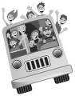

Günlerden Cuma’ydı; bugünü sevmeyen yoktur herhalde. Bugün George, cuma gününü her zamankinden daha çok sevdi. Bugün # 11 numaralı otobüse bambaşka bir adam olarak bindi.
George ona gülümsediğinde Joy, “Senin neyin var şekerim?” diye sordu.
George, “Bilemiyorum. Sanırım otobüs durağına gelirken yaptığım Teşekkür Ederim Yürüyüşü sayesinde oldu” diye yanıtladı. “Dün işyerinde bir kez ve dün gece de başka bir başarı yürüyüşü daha. Gerçekten de işe yarıyor gibi.”
“Sana söylemiştim George. Pozitif köpeği beslemekten daha iyisi yoktur. Fakat dinle beni. Sana söyleyeceğim çok önemli bir şey var. Ben ve ekibim konuşuyorduk ve şu yeni ampul tanıtımında başarılı olabilmen için sana yardım etmeye karar verdik. Artık içinde pozitif enerji dolaştığına göre, bunu ekibinle de paylaşmaya hazırsın ki bu çok iyi olur; çünkü eğer başarılı bir ürün tanıtımı gerçekleştirmek istiyorsan, ekibini de otobüsüne almalısın. İşte kural # 4, George. Danny, hadi göster ona. Danny, kural # 4’ü çıkardı ve üzerinde şöyle yazıyordu:
Kural # 4
İnsanları Otobüsüne Davet Et ve Önünde Uzanan Yol Hakkındaki Hayallerini Onlarla Paylaş.
Joy, “Unutma, otobüsün kaptanı sensin, George” dedi. “Fakat kaptan sen olduğun müddetçe insanları otobüsüne davet etmek isteyeceksin. Sana verebilecekleri en kötü cevap hayır olacaktır. Ama eğer onları davet etmeyecek olursan, bunu hiç bilmeyecekler. Bununla birlikte, yol boyunca ne kadar çok insanı otobüsüne alırsan, yolculuğun boyunca o kadar fazla enerji yaratırsın. Sonuçta amacın otobüste yalnızca ayakta durabilecek kadar yer bırakmaktır ve bu bir enerji otobüsü olduğu için sürekli genişler, yani istediğin kadar kişiyi otobüse alabileceksin. Artık biliyorsun George, ekibini otobüse davet etmen çok önemli, aksi hâlde ürün tanıtımını tek başına yürüteceksin ve bunu tek başına yapamazsın. Bunun için ekibine ihtiyacın var. Ne demek istediğimi anlıyorsun değil mi?” diye sordu Joy.
Karmaşa içindeki ekibini düşünmekte olan George, “Evet anlıyorum” diye yanıtladı. Bu tanıtımı tek başına yapmaya kalkışırsa, çok fazla yükün altına gireceğinin ve sadece organize olmuş, enerji dolu bir ekibin başarılı bir ürün tanıtımı yapabileceğinin farkındaydı. Fakat bilmediği bir şey vardı, o da böyle bir ekibi nasıl meydana getireceğiydi. “Aklından geçen nedir?” diye sordu.
Joy, su şişesinden büyük bir yudum alırken, “Ohhh, bir biletimiz var, George. Gerçek anlamda bir biletimiz var” dedi.
Hafif beyazlamış kahverengi saçlı, ufak tefek bir bayan oturduğu koltukta doğrularak, nazikçe, “Ona açıklamamı ister misin?” diye sordu.
Joy, “Tabii ki” diye karşılık verdi. “Fakat ilk önce seni ona tanıtmama izin ver.” Joy, Janice’in bir okulda öğretmenlik yaptığını ve bir süredir enerji otobüsü kurallarını okulundaki öğretmenlerle ve öğrencileriyle paylaştığını ve bunda başarılı olduğunu, hatta www.theenenergybus.com adındaki internet sitesi aracılığıyla, herkesin faydalanabilmesi için bunları tüm dünyayla paylaşmaya başladığını anlattı.
Joy, “İnanabiliyor musun, George!” diye haykırdı. “Artık evrensel olduk ve Janice mesajımızı dünyadaki tüm insanlara ulaştırıyor.”
Janice, utangaç bir tavırla konuşmaya katılarak, “Bu çok heyecan verici” dedi. “Çünkü Joy, insanların ekiplerini, çalışmalarında onlara destek olabilecek pozitif insanlardan oluşturmalarının ne kadar önemli olduğunu açıkladı ve ben de web sitesine, isteyenlerin e-mail ile otobüs bileti göndererek dostlarını, iş arkadaşlarını, patronlarını, ailelerini ya da otobüse binmek isteyen herkesi davet edebilmelerini sağlayan bir özellik ekledim. Bununla birlikte, eğer yüz yüze davet etmek istediğiniz kişiler varsa, web sitesindeki biletleri basarak elden de verebilirsiniz.”
Joy, Janice’in söylediklerini onaylayan bir işaret yaparak, “Bu harika öyle değil mi George?” dedi.
Ardından Janice, konuşmasını sürdürdü. “Ah, neredeyse unutuyordum. E-otobüs biletinle birlikte, hayallerini ve amacını anlatan bir de mesaj gönderebilirsin. Yani e-otobüs biletlerini ekibine gönderdiğinde, George, şu mesajı da yazabilirsin: İşte ekibimiz, ürün tanıtımımız ve otobüsün varacağı nokta ile ilgili öngörülerim budur ve sizleri de bu otobüse binmeye davet ediyorum. Okulda yeni bir girişim başlatırken bunu sık sık yaparız ve müdür, otobüse davet etmek için tüm öğretmenlere e-otobüs bileti gönderir. Çok eğlencelidir; fakat asıl önemlisi çok da işe yarar.”
Joy, her zamankinden daha da heyecanlı bir hâlde, “İşte bahsettiğim şey buydu!” dedi. “İnsanların otobüsüne binmelerini sağlamak için onlara nereye gideceğini söylemek ve onları otobüse davet etmekten daha iyi bir yol yoktur. Fakat unutma George, hayallerini onlarla paylaşmalısın. Tanıtımın nasıl olmasını istediğini ve ekibinin iç çatışmalar olmadan ve egolarını işin içine katmaksızın nasıl birlikte çalışmalarını beklediğini net bir şekilde ortaya koymalısın. Onlara aynı zamanda üstün performans sağlayacak olan ortak çıkar uğruna herkesin bir araya gelmesini istediğini de söylemelisin. Varmayı planladığın noktayı onlara net bir şekilde açıklamazsan, hiç kimse seninle yolculuk etmek istemez.”
Ardından Joy, George’a birlik olmayı önerdi. Joy, bu alıştırmayı daha önce de yapmıştı ve otobüsüne binen herkesi şaşırtacak kadar işe yaramıştı. Hatta özel bir web siteleri yokken ve otobüs biletlerini elle yaparlarken bile işe yarıyordu. Fakat sonra donanımlı bir duruma geldiler ve George da öyle olabilirdi. E-otobüs biletini, yanında mesaj olmadan patronuna ve ekip arkadaşlarına nasıl göndermesi gerektiğini anlattı ona. Bunun onları meraklandıracağını söyledi. Her şeyi George’a adım adım açıklayarak, herkesle tek tek nasıl görüşeceğini, ürün tanıtımı için aklından geçenleri onlarla nasıl paylaşacağını ve www.theenenergybus.com adresinden basılan otobüs biletlerini her birine nasıl vereceğini anlattı. Ardından e-maili şu cümlelerle bitirmesini tavsiye etti: “Artık otobüsümün nereye gideceğini biliyorsunuz ve varacağımız nokta ile ilgili kafanız netleşmiş durumda olduğuna göre, eğer otobüsüme binmek istiyorsanız, biletinizin üzerine isminizi ekleyerek, pazartesi sabahı saat 9’a kadar ofisime getirmenizi rica ederim.”
George, bütün bunları yapmak için sabırsızlanıyordu. NRG-2000 tanıtımına tam bir hafta olduğundan zamanlama harikaydı ve pazartesi günü kimin otobüse binip binmeyeceğini öğrenmiş olacaktı. Bununla birlikte hafta sonunda herkes, gelecek olan büyük haftaya hazırlanma fırsatı bulacaktı. Enerji yer değiştiriyor, diye düşündü George.
Otobüs George’un işyerine yaklaştığında Joy, “Ve bir şey daha” dedi. “Eşin için de ayrı bir e-otobüs bileti hazırlamayı unutma ve ona kendin, evliliğiniz ve aileniz hakkındaki hayallerinden bahset. Senin nereye gitmek istediğini onun da bilmeye ihtiyacı var, George. Bunu unutma.”
George, “Unutmam” diye karşılık verdi. “Bunu yapacağım.” İlk defa arabasının lastiği patladığı için seviniyordu. Belki de tüm bu olanların bir sebebi vardır, diye düşündü. Belki de uzun bir süre sonra şans yüzüme gülmeye başladı ve belki ama belki şansım ve içinde bulunduğum durum değişmek üzeredir.